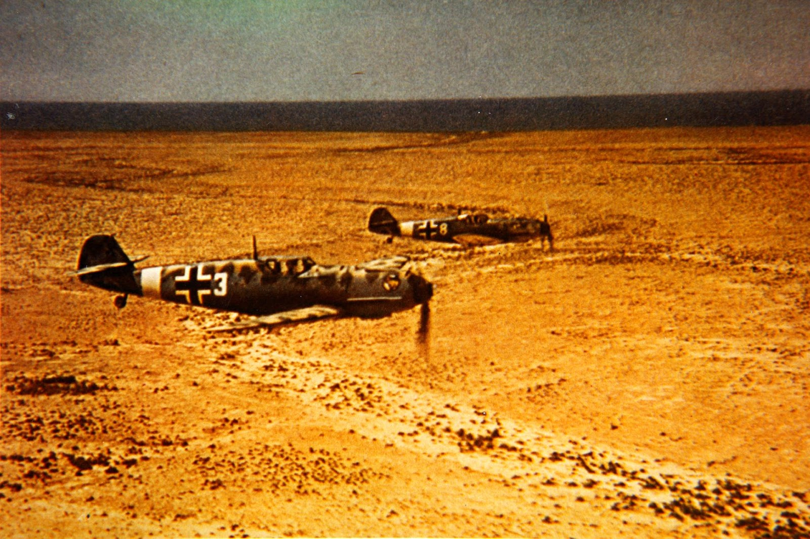
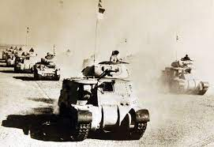
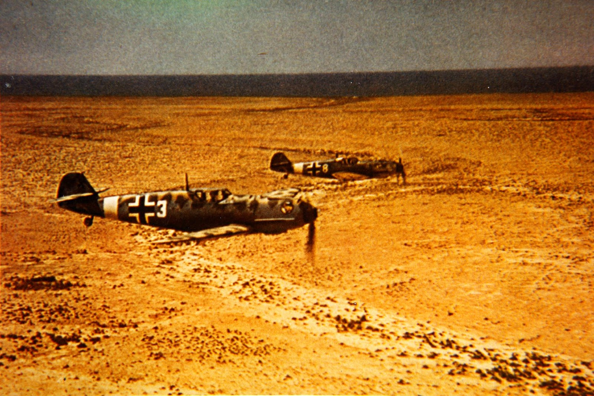
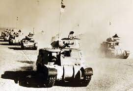

.jpg)
.jpg)
.jpg)
.jpg)
.jpg)
.jpg)
.jpg)
.jpg)
World War II was one of the most appalling events in the History of manking. Millions of people lost their lives needlessly and millions more suffered terrible trauma and appalling psychological distress.
The Evil roots of World War II stemmed from the outcome of World War 1. The circumstances that lead to the ending of the first World War had greatly impacted on the minds of the German people. Germany had to pay over £6 billion pounds in reparations to other countries for the damages caused in the First World War. On top of that, the Treaty of Versaille was not welcomed by the German people and the German government.
German society felt a sense of humiliation and blame since the ending of the 1st World War and this humiliation began to grow more and more like a cancerous tumor in the minds of many German people. German people did not like the unequal level of blame attached to Germany for the cause of WW I. Thus, this feeling of blame and humiliation began to grow into a need for a form of retribution in the minds of German society.
Adolf Hitler fought in the 1st World War and received an Iron Cross for bravery. With his past experiences of War and his belief that Germany needed to be removed from all blame for the 1st World War, this motivation lead him down the path of Political ideology.
Hitler bacame Chancellor of Germany in the 1930's and with the death of German President Hindenberg, Hitler then became President of Germany - The Highest position in government, which was colloqually referred to as "The Fuhrer".
Hitler was now in Pole position to dominate his political party - the Bundestag - The Reichstag - in Berlin.
Hitler became more and more popular in Germany and he gathered immense support from the German people. His new position in government as the Fuhrer allowed him to carry out his long awaited plans for retribution and thus in September 1939 Hitler ordered the invasion of Poland and World War II began in earnest.
Germany
The Third Reich
Invasion of Normandy
D-day
6th June 1944
The Battle of Mid-Way
June 1942
World War II
Fighting in North Africa stemmed from the area's strategic importance to the Commonwealth. Egypt's SUEZ Canal connecting the Mediterranean Sea to the Red Sea, was a vital transport artery, while the Middle East oilfields were crucial to sustaining the Allied war effort. Italy's decision to enter the war in 1940 alongside Germany, seriously jeopardised the British' position in Egypt. Italian forces in Libya and Abyssinia (Ethiopia) dwarfed the 36,000 British troops in the region. This threat became real when 250,000 Italian troops crossed the Libyan border into Egypt in September 1940.
In February 1941 the first elements of the Deutsches Afrika Korps (German Africa Corps) arrived to bolster the Italians, then reeling from a series of Allied blows. Commanded by General Erwin Rommell, an officer whose bold tactics earned him the moniker "Desert FOX" this small force soon made its mark in the campaign.
Conflict in North Africa had been ignited in 1940 by Italy's invasion of Egypt from it's colony of Libya. This threatened Britain's vital strategic assets, namely, the Suez Canal and the Persian oil fields. However, when the Italians were defeated, Germany intervened on behalf of its ally in the spring of 1941. Under the bold leadership of General Rommel, the Axis enjoyed surprising successes, recapturing Libya and threatening Egypt.
Yet, by late 1941, when Rommell's forces had over stretched their supply lines, they were forced to retreat in the face of a determined British offensive. The following year, a revived Axis effort saw Rommel defeat the British at Gazala and capture the city of Tobruk.
For a while it seemed that Rommell would link up with the Germans advancing in the Caucasus and thus overrun the whole Middle East. The British conducted a chaotic retreat into Egypt, but rallied their battered army and made a stand at the First Battle of El Alamein. This was a position that, unlike others in the desert, could not be turned by a flanking manoeuvre. It bordered both the Mediterranean and the Qattara Depression, a sea of quicksand impassable to mechanised machinery and soldiers on foot. The summer of 1942 saw the defeat of Rommell's final efforts to break through into Egypt. The initiative now lay with the British. They planned another offensive that would finally end the Axis threat to the Middle East.
The battle of El Alamein was fought near the western frontier of Egypt between the 23rd October and 4th November 1942. El Alamein was the climax and turning point of the North African campaign in the Second World War. The Axis army of Italy and Germany suffered a decisive defeat by the British Eighth Army. After the First Battle of El-Alamein, Egypt (150 miles west of Cairo) ended in a stalemate, the second one was decisive. It marked the beginning of the end for the Axis in North Africa. The charismatic Field Marshal Erwin Rommel was comprehensively defeated by the British 8th Army and Allied material superiority meant that he had little chance of rallying his broken forces.
After the British had inflicted severe defeats on the Italian forces in North Africa, the German general Erwin Rommell was chosen commander of Axis forces in Libya (Feb 1941). In January 1942 his forces started a new drive eastward along the North African coast to seize the Suez Canal. After losing Benghazi in January, the British held the Germans in check until May. Then the German and Italian forces were able to destroy most of the British tank force, take Tobruk, and move eastward into Egypt, reaching the British defenses at El-Alamein on June 30, 1942. Rommell attacked this line on 1st July, but the next day the British commander Gen. Claude Auchinleck, counter attacked, and a battle of attrition developed.
By mid-July Rommell was still at El-Alamein - blocked & had even been thrown on the defensive, thus ending the 1st battle. The British had stopped his drive to overrun Egypt & seize the canal. Allied losses for this first battle amounted to some 13,250 killed, or wounded out of 150,000 troops-for the Axis, some 10,000 were killed, or wounded out of 96,000 troops. In the wake of this defensive success, Auchinleck was sacked, but his replacement was killed, paving the way for Bernard Montgomery to take command of Britain's 8th Army in North Africa. With Rommell on the defensive, Montgomery took this time to build up a sizeable army in preparation for a new offensive, the 2nd battle of El-Alamein.
The British had built a defensive line at El-Alamein because the Qattara Depression to the South was impassable for mechanized forces. A narrow choke point prevented the German panzers from operating on their preferred southern flank with open terrain. Now that the British had moved over to the offensive, the proposed battlefield also suited the British 8th Army, whose main strength lay in it's artillery and infantry formations.
By mid-October 1942, Montgomery could deploy approximately double the number of men and tanks available to Rommell's German-Italian army. The British also enjoyed the invaluable advantage of air superiority over the battlefield. Aware that an attack was imminent, Rommell had prepared his defenses as best he could, sowing hundreds of thousands of anti-tank and anti-personnel mines along his front to slow any British advance. Rommell returned to Germany to recuperate from illness shortly before the British offensive was launched, with his command passing to a subordinate. Montgomery's plan comprised a diversionary attack to the south, spearheaded by Free French troops, while the main attack would come in the northern sector, close to the coast. The British would break into the Axis line and force them to counterattack. In the process, the British would wear down the enemy's offensive capability.
New Zealand troops began arriving in Egypt in February 1940. The First Echelon of the 2nd New Zealand. Expeditionary Force (2 N.Z.E.F.) formed after New Zealand declared war on Germany in September 1939 established a large camp at Maadi, 12 km south of Cairo. Another smaller camp was set up 12 km further south at Helwan. The New Zealanders saw little action during the initial stages of the North African campaign. Most of the fighting took place between the Western Desert Force (composed of British, Indian & Australian troops) and Italian forces. British and Commonwealth troops did not think much of their 'Itie' opponents. Some units fought well, but in general the Italians were badly equipped and poorly led. Many Italian troops were ambivalent about fighting on the German side and unwilling to give their lives for a cause in which they did not believe.
The main fighting element of 2 N.Z.E.F. was the 16,000-strong 2nd New Zealand division. The Division was commanded by First World War Victoria Cross (V.C.) winner - Major General Bernard 'Tiny' Freyberg who also commanded 2 N.Z.E.F. After returning to Egypt following the disastrous campaigns in Greece and Crete, the New Zealand Division entered the fray in North Africa during Operation Crusader in November 1941. For the next year, they saw action in the western part of Egypt with several forays into neighbouring Libya.
Conditions in the desert were very tough. Cold nights and searing daytime temperatures made life very uncomfortable for soldiers. Shade from the sun was difficult to find and makeshift shelters did little to block the sun's rays. Sandstorms were frequent and posed regular hazards. Sand & dust stirred up by moving vehicles and machinery moving shellfire covered everything like a blanket. The lack of drinking water, let alone water to wash, or shave in was a constant source of annoyance. So were the flies! Desperate for moisture, they settled on lips, or sweaty shirts in their hundreds. During daylight hours men struggled to eat as flies swarmed on their food, or dived into their drinks. One inevitable result was dysentery - a miserable sickness to endure, or experience. Mosquitoes caused other torment. Although they were less prevalent, they were more lethal - as in most areas they transmitted malaria. Adding further to a soldier's misery were desert sores. Any scratches, or small cuts in the skin would rapidly become a suppurating mess. Everyone it seemed, wore bandages on their arms & legs.
.jpg)
.jpg) 



.jpg)
.jpg)
.jpg)
.jpg)